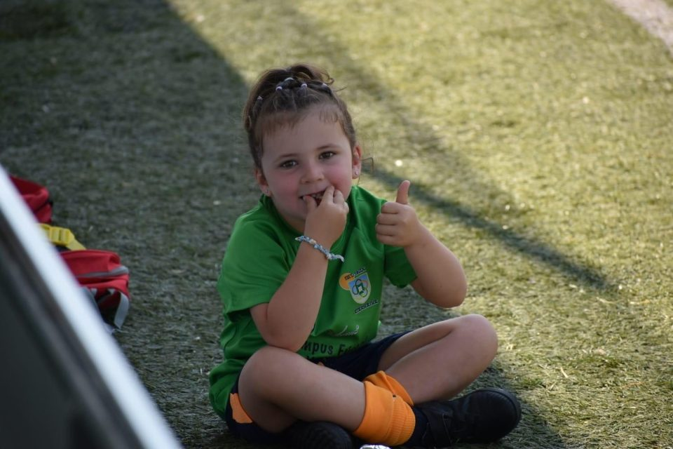
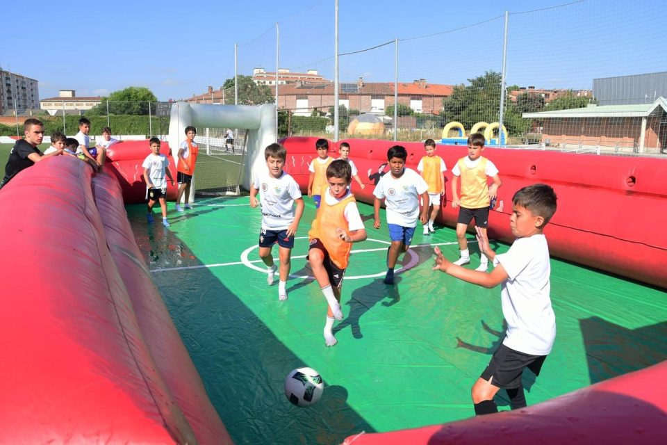
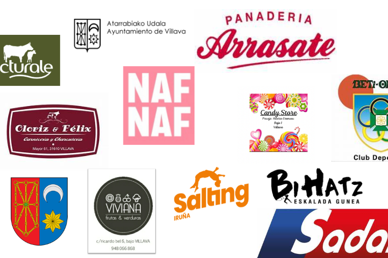

Programa
Sumérgete en el mundo del fútbol con entrenamientos de calidad, desarrollo personalizado y diversión asegurada. El campus combina aprendizaje, juego y actividades pensadas para progresar sin perder la ilusión.
III edición · Del 20 al 30 de julio
Una experiencia inolvidable llena de goles, risas y aprendizaje para niños y niñas que quieren disfrutar del fútbol, mejorar y compartir equipo durante el verano.

Sumérgete en el mundo del fútbol con entrenamientos de calidad, desarrollo personalizado y diversión asegurada. El campus combina aprendizaje, juego y actividades pensadas para progresar sin perder la ilusión.

Este verano la diversión también está garantizada fuera del campo. Contamos con hinchables para disfrutar al máximo y uno de ellos es de agua, perfecto para refrescarse en los días de calor.

El campus cuenta con el respaldo de patrocinadores que comparten nuestra pasión por el deporte. Gracias a su apoyo podemos ofrecer una experiencia futbolística emocionante y de calidad.
Campus de fútbol para niñ@s